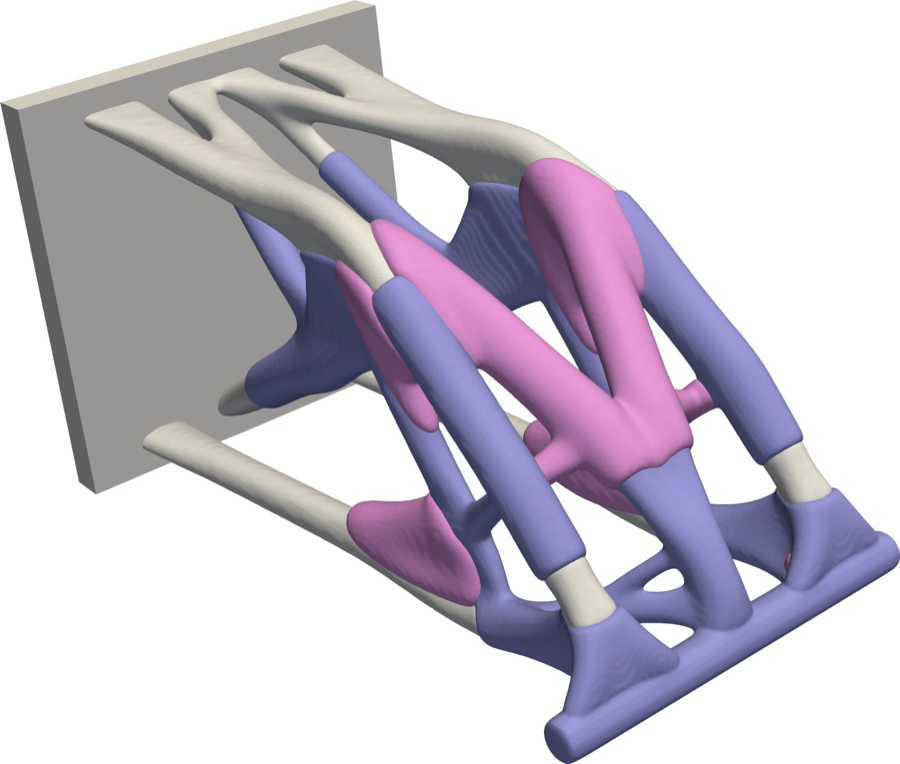
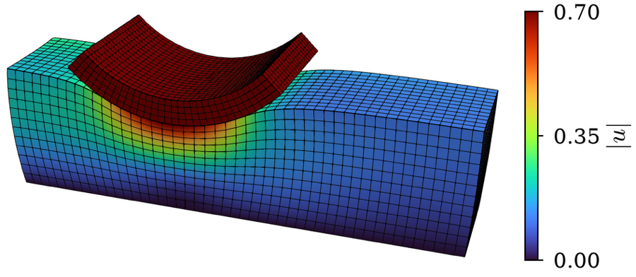

Dohyun Kim GitHub Google Scholar Email
I am an applied mathematician working on numerical PDEs, variational inequalities and constrained optimization. I develop and analyze finite element and first-order optimization methods that keep every iterate feasible, including the SiMPL method for topology optimization, and implement them for large-scale problems on GPUs in MFEM, where I am a developer and official code reviewer.
I work with Brendan Keith at Brown and am co-PI on a DOE Advanced Scientific Computing Research grant on proximal Galerkin methods for state constraints (2026–2030). I received my Ph.D. in Computational Science and Engineering from Yonsei University in 2021, advised by Eun-Jae Park.
Research interests
- Topology optimization and PDE-constrained optimization
- Proximal Galerkin methods for variational inequalities and contact
- Discontinuous Galerkin and nonconforming finite element methods
- High-performance finite element software (MFEM)
Contact: dohyun_kim@brown.edu
See Publications Download CVSiMPL method for topology optimization
SiMPL (Sigmoidal Mirror descent with a Projected Latent variable) is a first-order method for density-based topology optimization:
- Every design stays within its bounds, without move limits
- Converges in far fewer iterations than OC and MMA
- Convergence analysis in SIAM J. Optim.
- Extends to multi-material design
- Available as MFEM Example 37


Proximal Galerkin methods
Proximal Galerkin methods solve variational inequalities with pointwise constraints:
- Discrete solutions satisfy the constraints exactly
- Iteration counts independent of the mesh
- High-order, discontinuous and non-symmetric problems
- Applications to obstacle and contact problems
General Hyperbolic Conservation Laws in MFEM
Hyperbolic conservation law integrator:
- General hyperbolic conservation laws with (approximate) Riemann solvers
- Easy-to-use, general implementation in MFEM
- An official MFEM example since MFEM 4.6

MFEM Tutorial
Basic MFEM tutorial:
- Basic concepts of the finite element method
- Connection between the mathematical form and the MFEM implementation